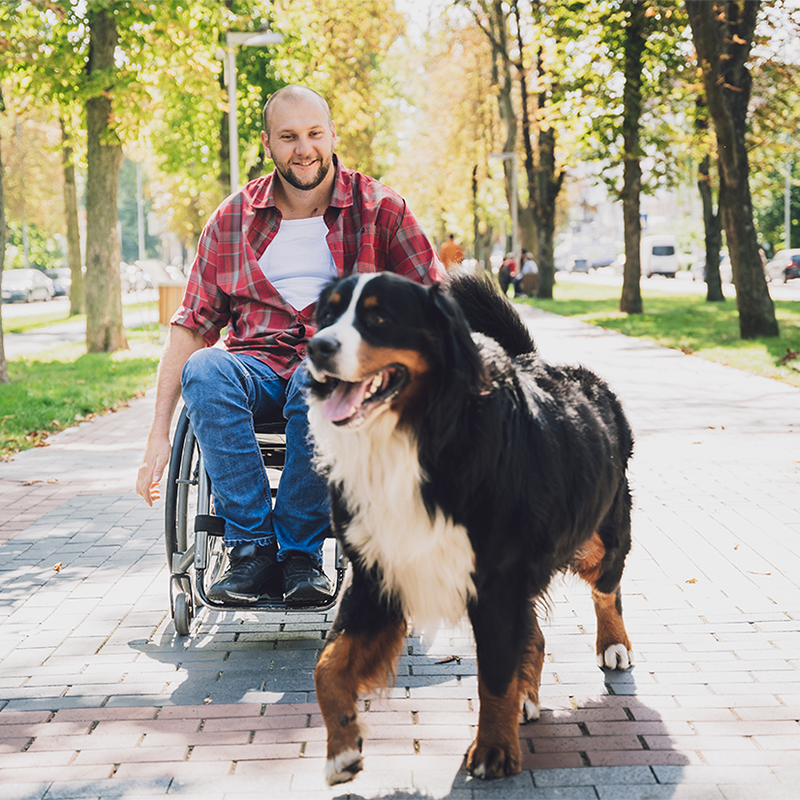

Our Mission
At Twin Cities Animal Rescue, we are dedicated to rescuing, rehabilitating, and finding loving permanent homes for animals in need while fostering a compassionate community.
Our Impact
- Over 1,200 animals rescued and rehomed in the past year.
- More than 450 active foster families supporting our network.
- 98% successful adoption placement rate achieved through community dedication.
How You Can Help
There are multiple ways to make a lasting difference in the lives of our rescued animals, whether through adoption, temporary fostering, or volunteering.
